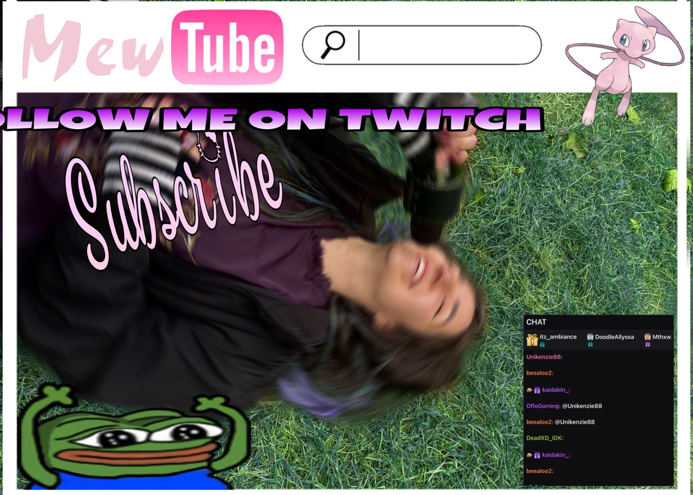
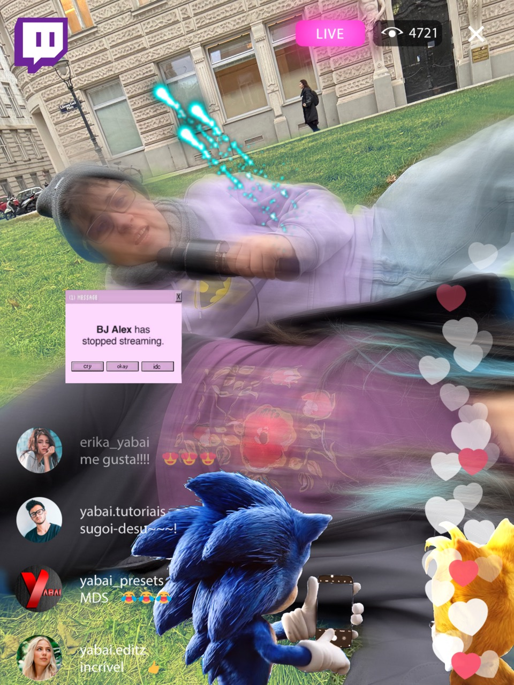

Touching Windows XP Wallpaper Grass

On the internet, if someone seems delusional, you advise them to step outside for a second. You tell them to “touch grass”: feel the earth beneath your bare feet and reconnect with reality after too much screen consumption, suggesting that the grass outside is more real than the world behind the screen.
In the lecture performance “Touching Windows XP Wallpaper Grass” the Vienna-based media arts duo dependencies failed examines and reckons with the arts’ focus on natureculture, bodymind, embodied knowledge, interactions and decentralised networks as liberatory concepts, while living in a post-truth (subjective), multipolar (decentral) world full of agents (agential). Touching upon nature fetishism and analog chauvinism, the group asks and daydreams about which concepts will pervade this era.
The performance takes place on a patch of grass in front of the Post-Spar-Kasse. It is filmed, fragmented, controlled and mediated through multiple live streams which are shown on a monitor in the AIL and can also be accessed by visitors on their phones.
The artistic method is to perform and exaggerate a reaction to this dilemma drawing on the memetic visual languages of brain rot, sludge content and streaming-cultures to establish a post-ironic framework. Concepts of imagined networked cultures are pushed to such an extensive scale that they collapse into absurdity, opening up a space to reevaluate and discuss the limits and contradictions of decentralised meaning-making.

Technical Ryder
For the performance nothing specific is needed other than a screen or a beamer in the Kassenhalle that is able to show our stream.
All the other technical equipment (microphones, cameras etc.) will be provided by ourselves.